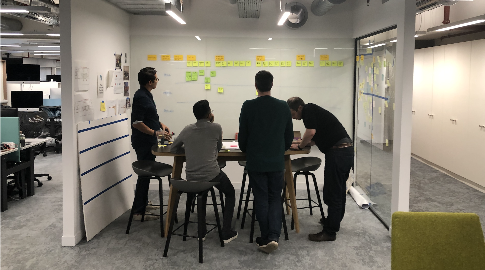
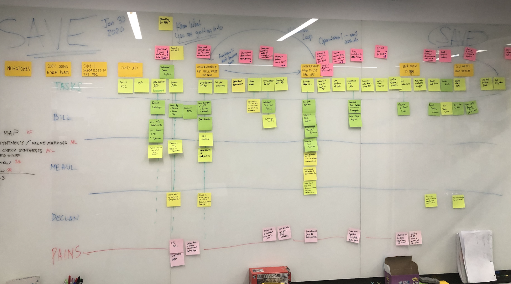
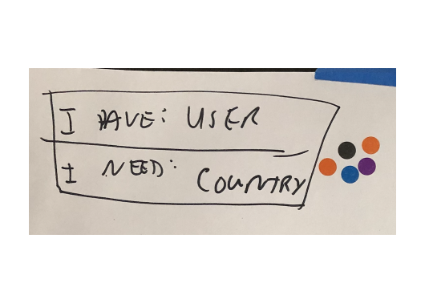

Tl; dr
- For enterprise developers, getting access to software-building tools on cloud platforms is rife with bottlenecks and red tape.
- We reimagined a better experience by anchoring product ideas around a nuanced understanding of customer problems. Our solutions were not just informed by the fact that bottle necks and red tape exist, but by why they exist.
Impact
- Our product vision laid the foundation for a compact, two-day design sprint and product kickoff informed by a clear understanding of customer needs.
- Our research had an impact far beyond the scope of this project—it informed several other teams working in a similar domain.
Learnings
- If a design process is not working, nip it in the bud and pivot.
- Transdisciplinary ideation is energizing and fruitful.
- Storyboards are a powerful way to convey product visions.
A Compact Design Sprint in an Expansive Problem Space
When You Have a Direction But Need Velocity
This project started as a challenge posed by Pivotal's director of product for its London R&D org. She wanted me to do two things:
- Discover the top problems engineers in large enterprises have in getting the tools they need to build software.
- Organize a product team anchored around those problems and come up with solutions.
It was a big ask, but also a big opportunity.
Role and Team
My Role
As design lead, I drove the research and synthesis over a period of several weeks. After that, I facilitated a week-long ideation workshop and design sprint.
Skills
User research, workshop facilitation, collaborative ideation, storyboarding
Collaborators
For the research, I paired with an engineer (and aspiring designer) on a daily basis. After that, I facilitated design workshops which included an R&D engineering team, a PM, and a new-hire designer. I also had weekly one-on-ones with the director of product.
Design Sprint
Delegating the Curation and Management of Dev Tools
We decided to first focus on enabling operators to deligate responsibilities. In particular, developer-created tools (a.k.a., APIs) through a marketplace-like experience. This resonated with data we learned in our research: Enterprises manage tens of thousands of APIs, which is painful and challenging.
Enterprises manage tens of thousands of APIs. It’s painful and challenging. We started there. It’s a tough problem space. Our customer can have up to 80,000 APIs. These APIs are a tangled mess of overlapping functionality and varying levels of quality. On top of that, there are established competitors.
Our customers can have up to 80,000 APIs. These APIs are a tangled mess of overlapping functionality and varying levels of quality.
UX Flows
Mapping the Journey
We decided to first focus on enabling operators to deligate responsibilities. In particular, developer-created tools (a.k.a., APIs) through a marketplace-like experience. This resonated with data we learned in our research: Enterprises manage tens of thousands of APIs, which is painful and challenging.
We needed a journey map. By Wednesday.
Under tight time constraints, I facilitated a proto-journey mapping workshop with four field engineers who work onsite for companies in different industries. We brainstormed user tasks in finding APIs, rolled those up into goals and folded in pain points and other context.
(Read more about proto journey mapping here.)

Field engineers helped us map out how app devs find APIs within their organizations.
Our proto-journey map defined four phases: find, analyze, test and wire (FAT Wire). Each phase had goals and pain points. This model of the journey would be the template we would use to reimagine the API discovery experience.
Key drivers for app devs looking for an API:
App devs want to find existing functionality through APIs that meets their needs so they don’t have to create it themselves.

Each field engineer had their own swim lane to describe their version of the journey. We then consolidated everything into one flow.
The API Discovery Journey
Overall goal: App devs want to find an API that meets their needs so they don’t have to create needed functionality themselves.
Phase
User goals
Pain points
Find
Find an API given a set of needs (e.g., given a passport ID, confirm citizenship.)
Searches for API functionality in existing systems can return hundreds of results, which are difficult to decipher.
Analyze
Understand how API works and what it can provide.
Discover any deal breakers such as SLAs that don't meet teams needs.
APIs are of varying quality. Quality is difficult to evaluate.
Test
Be confident that the API will be performant under load and work as desired.
Experiment to understand how API works (rather than read documentation.)
Access isn’t always readily available.
Wire
Get the API working with codebase.
Credentials are often (up to 80 percent of the time) sent through email, posing significant security risks.
Competitive Analysis
Putting Our Rival’s Strengths and Weaknesses in Context
Two engineers on the team performed a competitive analysis of two rivals. We took this and mapped it onto our journey: A green check showed competitor strength, a red “x” weakness / opportunity, and a question mark a mixed bag. This mapping helped us visually see where we need to have parity and where there might be opportunities to differentiate.

A digitized version of our proto journey map. The checks and x's in the center rows show where competitors have strengths and weaknesses.
Potential strategic advantage
In the process of mapping our journey and competitive analysis, a potential advantage appeared: Security. Credentials are often sent through email, posing significant security risks. We effectively “own” the network on our platform and know user access rights. We could grant API access without credentials being passed around.
Design Studio
Reimagining the Journey

Gallery walk. Pictured are product engineers and field engineers.
Now that we understood something about the developer user journey around getting access to APIs, we set out to reimagine it. We set up a design studio in which everyone would sketch concepts that would seed our initial designs.
(Read more about design studios here.)
Finding Inspiration Outside Our Domain
Everyone had a homework assignment: Find designs in different domains that do well what we want to do (find, analyse, test, wire) and present what they like and why. This exercise gets participants to think laterally. There were a couple highlights:

Amazon.com
Presenters pointed out name bands are important in evaluating quality when making a purchase decision on Amazon. This resonated with our research: Certain engineering teams who create APIs have reputations for creating high-quality code.
Ski demo day
These days, skiers can test out new skis during demo days at ski resorts. How is this relevant to APIs? The presenter explained there is no substitute for seeing how skis actually perform in different conditions like powder and groomed runs. Might the user “test drive” APIs?
Everyone had a homework assignment: Find designs in different domains that do well what we want to do.
Sketching and Evaluating
I read out a user scenario as a prompt, reviewed pain points and goals, and everyone started drawing. After than, we taped drawings to the wall and I facilitated a gallery walk in which everyone presented their ideas. We then dot voted and discussed our favorites.

"Cheatsheets" I handed out reminding sketching participants about user goals and pain points.

Our design studio during a coffee break

Gallery walk. Participants studied concepts before dot voting.
Up-Voted Ideas
The value in ideation workshops is not in the sketches or other artifacts produced, but in the conversations about them. After everyone presented ideas, we dot voted, then discussed what we liked about the top ideas.

Two-part search query
The most up-voted idea was a search field that prompts the user to complete the sentence, "I have..." In this case, a person. Once that is entered, the next field "I need..." is auto-populated with choices. This resonated with the engineers, who pointed out this is exactly how you think when looking for an API.

Machine-Learning search
The two-part search query was tied to a network database that learns over time how to best associate the "haves" and "needs".

Usage metrics
Another idea showed usage data so the user can see if the API is in use. This resonated especially with the field engineers who explained that there tends to be a lot of "dead wood" when searching for APIs.

In-browser querries
This concept conveyed an easy way to test drive the API by querying it from the browser.
Conclusion
Impact
Design Sprint
Our ideation session was the foundation for a compact, two-day design sprint. (I plan to include the sprint as a separate case study.)
Research Impact
Our research deck got a lot of attention. I presented it several times as part of our integration process. At several points there were dozens of people in the Google doc, including vice presidents. One PM told me she had been referring to the deck on a regular basis.
In addition, I later used the research findings to inform two other related projects.
Design Practice Impact
I documented the design process and presented it internally and externally, including two times for the U.K. Government Digital Services.
Learnings
If something is not working, nip it in the bud and pivot:
- Our initial scenario-based presentation didn't gel. We took the outcome we were after and came up with a solution that worked.
- High trust enables critical feedback, which was necessary for us to recover from mistakes.
Transdisciplinary ideation is powerful:
- We gained insights that only came about because designers, engineers and field engineers were working together on the same problem.
- Marketing team members on our advisory panel had feedback that the rest of us would not have thought of.
Don't underestimate the impact of vision storyboards:
- I got feedback that people had no idea of what we were up to until they saw the storyboard.
- In large organizations, I've found people will hear about your project, assume worst-case scenario, and imagine conflict that doesn't exist. A good vision storyboard can dispell mistrust and open doors for collaboration.